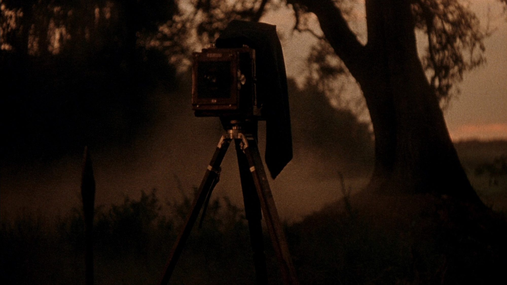
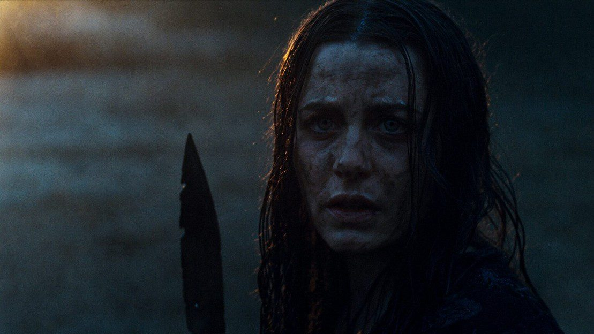
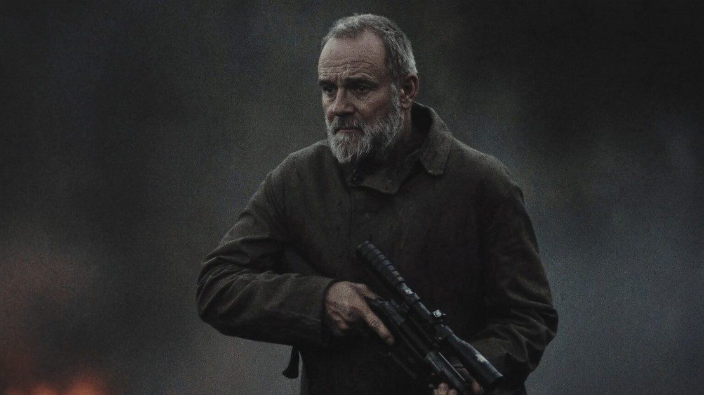

A Folk-Horror / Survival Thriller
THEY LIVE
AMONG THE TREES
Feature Film
R-Rated
Survival Horror
When a grieving family’s hike to scatter their father’s ashes goes wrong, they stumble into the hunting grounds of a forgotten cannibal tribe that has lived undetected in America’s last unregulated wilderness for centuries.
They realize that surviving the woods means becoming as savage as the thing hunting them.

A 1946 cold open, a photographer stalked and speared for daring to photograph “the Tree People,” establishes the legend as fact before the story ever touches the present day.
From there, the film plays as a domestic drama that curdles into visceral survival horror: a dysfunctional family bickering its way through a hike becomes a fight for survival against a forgotten tribe pushed by a dying world into ritual cannibalism.
Daniel, his girlfriend Jessica (main POV), his sister Rachel, her husband Chris, and their mother Marie set out to scatter their late father’s ashes at Angel’s Peak, deep in an unregulated wilderness rumored to be home to “the Tree People,” an urban legend the local rangers dismiss as folklore. The hike exposes every fracture in the family: Marie’s coldness, Rachel’s resentment, Daniel’s infidelity. It all comes spilling out before they even reach the trail’s end.
When they get lost off-trail, Rachel storms off alone after a fight with her mother and vanishes. The search splinters the family apart, and one by one they discover the legend is real: a tribe of camouflaged, spear-wielding people who live in the canopy, speak their own language, and survive by hunting anyone who wanders too deep. Daniel is captured and taken to their village, where a ritual of dark hospitality gives way to horrifying violence.
Marie and Jessica, fleeing through the night, are pulled into an alliance with Leroy, a traumatized ex-Navy SEAL living off-grid for years, who knows how to fight the tribe on their own terms. The brutal rescue mission into the heart of the village leads Jessica to Aiyana, the chief’s daughter. She learns the tribe’s story isn’t pure savagery, but a people driven to cannibalism by generations of isolation and ecological collapse.
Jessica escapes, but nearly everyone she came with is dead, and the only ally who kept her alive dies getting her out. She returns to civilization changed: someone who understands exactly why the tribe does what it does, and how she would be willing to do the same to survive. It ends on a horror-movie sting: Aiyana tracks her down in the city, forcing a confrontation that leaves Jessica standing over a body in her own apartment. It closes with Jessica walking back into the wilderness alone, ax in hand, sealing the trailhead as a scream rises from deep in the trees.


Unfaithful. The son who skipped his father’s funeral.
A mother whose grief curdles into cruelty. To guilt, to sacrifice.
Resentful. Sends the family off the safe trail.
Loyal, out of his depth, and lost saving Marie.
The tribe’s measured moral center.
Scarred. The ignored warning, telling the truth.
An invented people with a language, a faith, and a history. The mythology is the engine.
Original, consistent, subtitled.
Built around sacrifice and survival.
Chief, warriors, children.
Rooted in ecological collapse.
Mid-budget, R-rated survival horror keeps landing: Barbarian, Talk to Me, The Ritual, Prey.
One practically location-contained shoot, with mythology built for sequels from page one.
A real attempt to humanize the “villains.” The genre’s rarest trick.
Pathos for the tribe opens crossover, and a moral debate that outlives the credits.
A survival horror that costs like an indie, feels like a blockbuster, and leaves the audience arguing over who the real monster was on the way out.
Aiyana’s pursuit of Jessica into the city proves the threat isn’t contained to the woods. The final shot seals it: Jessica walking back into the wilderness she just sealed off.
An original story about an invented people. Full script and treatment available on request.